Background Info
Lead Conversion in EdTech:
The online education market is projected to reach $286.62 billion by 2023, with a compound annual growth rate (CAGR) of 10.26%. As EdTech companies scale, a critical challenge emerges: not all leads are equal. Companies generate thousands of leads through digital marketing, website interactions, and referrals, but only a fraction convert to paying customers. Identifying which leads are most likely to convert allows sales teams to allocate resources efficiently and maximize revenue.
Why is this important?
ExtraaLearn, an early-stage EdTech startup offering cutting-edge technology programs, faces this exact challenge. With a 30% base conversion rate and limited sales capacity, the ability to predict which leads will convert — and understand what drives that conversion — directly impacts the company's growth trajectory. This project applies four classification algorithms to build a predictive model and extract actionable business insights from lead behavior data.
Key Concepts:
Decision Tree: A flowchart-like model that asks sequential yes/no questions to classify leads.
Random Forest: An ensemble of many decision trees that vote on the final prediction, reducing overfitting.
Logistic Regression: A linear model that draws a boundary line to separate classes, assigning weights to each feature.
Gradient Boosting: Builds trees sequentially, where each new tree corrects the mistakes of the previous ones.
F1 Score: The harmonic mean of precision and recall — our primary metric because it penalizes models that sacrifice one for the other.
GridSearchCV: A systematic approach to finding optimal model settings by testing every combination across cross-validated folds.
Research Objectives
- Profile the leads — who converts and who doesn't?
- Identify the features that drive lead conversion.
- Build and tune tree-based classifiers (Decision Tree, Random Forest).
- Test alternative modeling approaches (Logistic Regression, Gradient Boosting).
- Compare all models and recommend a deployment strategy.
- Define what additional data would break through the performance ceiling.
Methods
Data.
The dataset was provided by ExtraaLearn and contains 4,612 leads with 15 features capturing demographics (age, occupation), engagement behavior (time on website, page views, website visits), interaction history (first interaction channel, last activity type), marketing channel exposure (print, digital, educational, referral), and profile completion level. The target variable is status — whether a lead converted to a paid customer (1) or did not (0). The dataset has a 70/30 class split (70.14% not converted, 29.86% converted), with no missing values.
Analysis.
The programming language Python was used in this project. Data was loaded and manipulated using the pandas library. The matplotlib and seaborn libraries were used to visualize data. The sklearn library was used to build and evaluate all machine learning models. Statistical significance testing was performed using scipy (Mann-Whitney U for continuous features, Chi-Square for categorical features), with Bonferroni correction applied to control for the multiple comparisons problem. Four classification models were trained and evaluated: Decision Tree, Random Forest, Logistic Regression, and Gradient Boosting. Each model was tuned using GridSearchCV with 5-fold Stratified Cross-Validation, optimizing for F1 score. The data was split 70/30 (train/test) with stratification to preserve the class distribution.
Why F1 Score?
With a 70/30 class imbalance, accuracy alone is misleading — a model that predicts "not converted" for every lead would achieve 70% accuracy while catching zero actual converters. F1 score, the harmonic mean of precision and recall, ensures the model must perform well on both: catching actual converters (recall) while not wasting the sales team's time on false leads (precision). The harmonic mean is stricter than an arithmetic average — it punishes models that sacrifice one metric for the other.
Results
Objective 1: Profile the leads — who converts and who doesn't?
The target variable shows a 70/30 split — 70.14% of leads did not convert, while 29.86% became paying customers (Figure 1). This imbalance shaped our entire evaluation strategy: accuracy would be misleading, so we adopted F1 score as the primary metric throughout this study.
{kind=link}
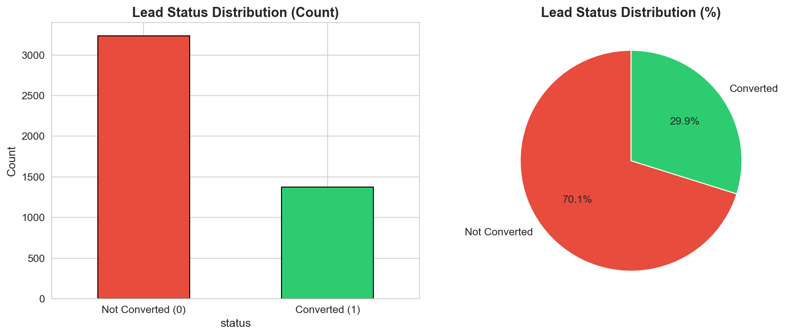
Figure 1. Target variable distribution showing 70/30 class split.
Examining the numeric feature distributions (Figure 2) reveals several important patterns. Age is roughly normally distributed centered around 46–51, with no extreme outliers. Time spent on website shows a clear bimodal distribution — two distinct groups of leads emerge, one spending under 400 seconds and another spending 600+ seconds. This bimodal pattern suggests the feature may naturally separate converters from non-converters, which was later confirmed in the bivariate analysis. Website visits and page views per visit are right-skewed with most leads visiting 2–4 times.
{kind=link}
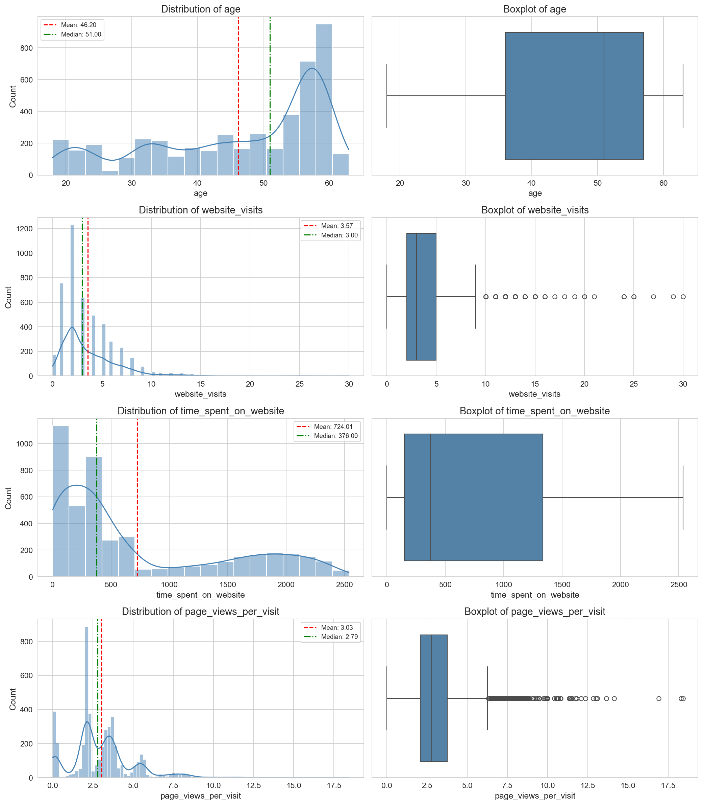
Figure 2. Distributions of numeric features with boxplots and histograms.
The categorical distributions (Figure 3) show that professionals make up 56.7% of leads, while students comprise only 12%. Website is the dominant first interaction channel (63.6%). Profile completion skews toward Medium (40.5%), with fewer leads at High (28.9%) or Low (30.6%). Marketing channel exposure is relatively low across the board — only 10–15% of leads have seen any given marketing channel.
{kind=link}
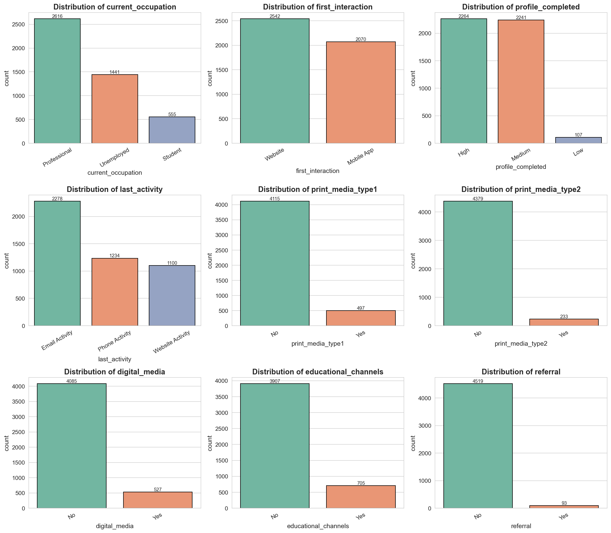
Figure 3. Distributions of categorical features.
The bivariate analysis revealed stark differences between converters and non-converters. Professionals convert at 35.5%, while students convert at only 11.7% (Figure 4). Website-first leads convert at 45.6% — a 4.3x advantage over Mobile App-first leads at 10.5% (Figure 5). High-profile leads convert at 41.8%, compared to just 7.5% for Low-profile leads (Figure 6). Referral leads, though only 2% of the total, convert at 67.7% — the highest rate of any channel (Figure 7).
{kind=link}
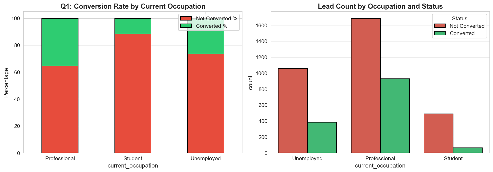
Figure 4. Conversion rates by occupation. Professionals convert at 35.5%, students at 11.7%.
{kind=link}
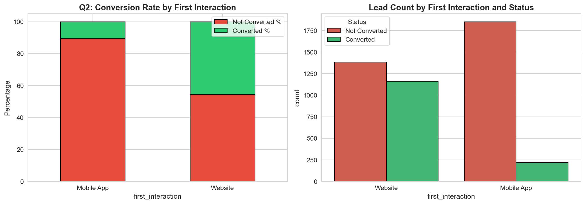
Figure 5. Conversion rates by first interaction channel. Website leads convert at 4.3x the rate of Mobile App leads.
{kind=link}
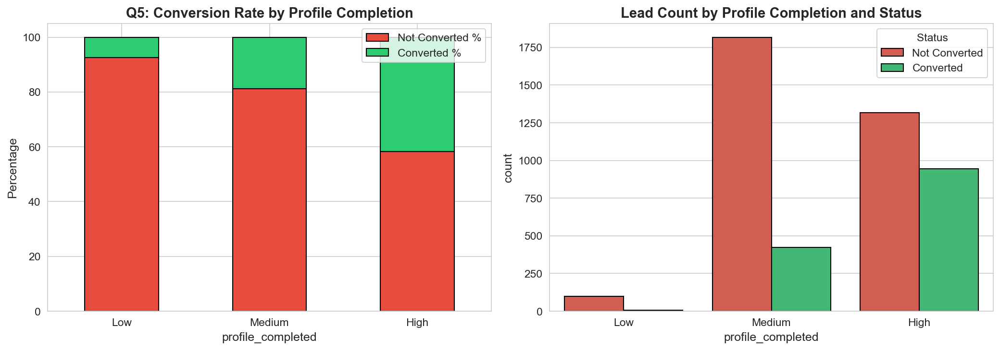
Figure 6. Conversion rates by profile completion level. High-profile leads convert at 41.8% vs. 7.5% for Low.
{kind=link}
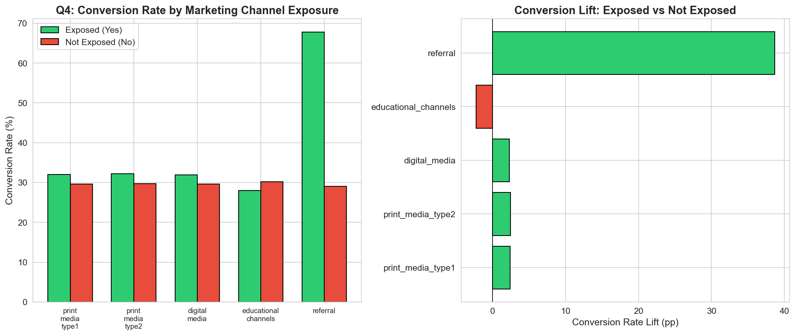
Figure 7. Conversion rates by marketing channel exposure. Referral leads convert at 67.7% despite low volume.
The boxplots comparing numeric features by conversion status (Figure 8) confirmed that time spent on website is the clearest numeric separator — converters average 1,068 seconds (17.8 minutes) versus 577 seconds (9.6 minutes) for non-converters. Notably, website visits and page views per visit show virtually no difference between groups, explaining their low importance in subsequent models.
{kind=link}
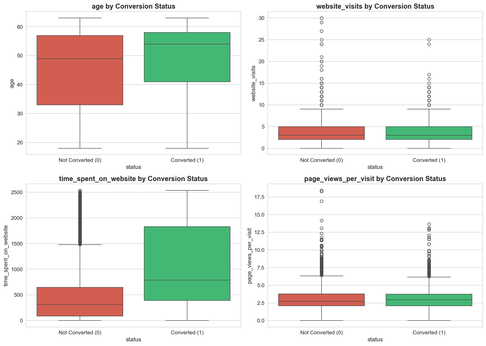
Figure 8. Numeric feature distributions by conversion status. Time on website shows clear separation.
Statistical significance testing confirmed these patterns. All features except website visits (p = 0.9099) and page views per visit (p = 0.9096) showed statistically significant relationships with conversion (p < 0.0001 after Bonferroni correction). The correlation heatmap (Figure 9) revealed no multicollinearity concerns — all pairwise correlations among predictors were below 0.40, meaning each feature contributes independent information to the models.
{kind=link}
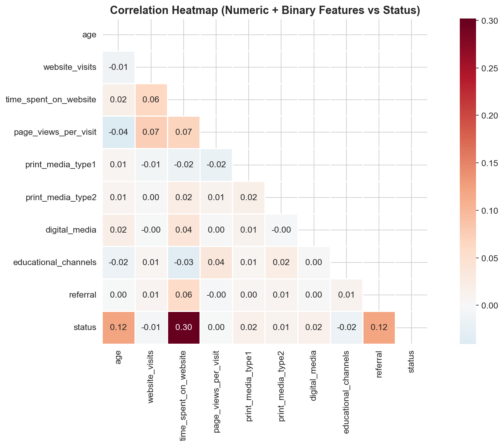
Figure 9. Correlation heatmap. No multicollinearity concerns — all pairwise correlations below 0.40.
Objective 2: Identify the features that drive lead conversion.
Across all four tree-based models trained in this study, the same three features consistently emerged as the primary conversion drivers (Figure 10). The tuned Random Forest was selected for the final feature importance summary because its random feature subsampling forces every feature to compete on its own merit across 100 independent trees — producing the most stable importance estimates.
{kind=link}
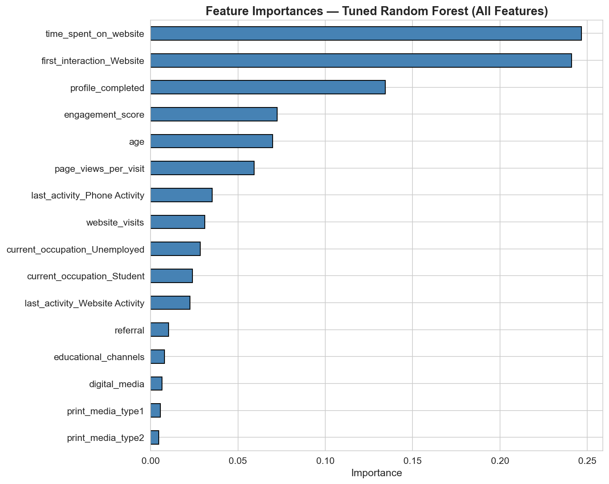
Figure 10. Feature importances from the tuned Random Forest. Top 3 features account for 62% of total importance.
The top three features — time spent on website (24.7%), first interaction channel (24.1%), and profile completion (13.4%) — account for 62% of total model importance. These three features alone explain nearly two-thirds of every prediction the models make. Time on website is the strongest behavioral signal: converters average nearly double the time (17.8 min vs. 9.6 min). First interaction channel captures the 4.3x conversion advantage of Website-first leads over Mobile App-first leads. Profile completion serves as a proxy for intent — leads who invest effort in completing their profile are signaling commitment to the program.
The remaining features — age, page views per visit, last activity type, and occupation — contribute supporting signal (28% combined). Marketing channel flags (print, digital, educational) contribute less than 3% combined across every model tested. This does not mean marketing is ineffective — it means the binary yes/no tracking of channel exposure is too coarse to capture marketing's real effect. All five marketing features had nearly identical exposure rates between converters and non-converters.
Objective 3: Build and tune tree-based classifiers (Decision Tree, Random Forest).
Decision Tree Baseline
A Decision Tree works like a flowchart of yes/no questions. The algorithm finds the single best question to separate converters from non-converters, then repeats at each branch. The baseline (unconstrained) tree grew to depth 26 with 423 leaves — essentially memorizing the training data. Training accuracy was 99.97% but test F1 dropped to 0.6995, a 30-point gap confirming severe overfitting (Figure 11).
{kind=link}
Figure 11. Decision Tree Baseline — confusion matrix, feature importances, and ROC curve. AUC = 0.789.
Decision Tree Tuned (GridSearchCV)
GridSearchCV with 5-fold Stratified CV identified optimal parameters: max_depth=5, min_samples_leaf=10, criterion=gini. Capping depth at 5 forced the tree to keep only the most informative splits. The result: test F1 improved to 0.7631, and the train-test gap collapsed from 30 points to just 1.75 points — a 94% reduction in overfitting (Figure 12).
{kind=link}
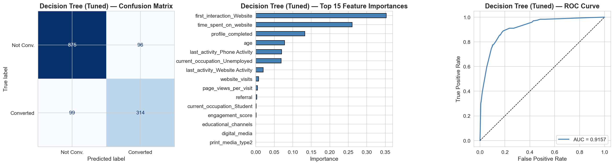
Figure 12. Decision Tree Tuned — confusion matrix, feature importances, and ROC curve. AUC = 0.916.
The tuned tree visualization (Figure 13) reveals the model's decision logic. The root split asks: "Did this lead spend more than 418 seconds on the website?" Leads who spend less time go left toward a profile completion check; leads who spend more go right toward a first-interaction-channel check. The highest conversion path (81%) runs through: high time on site, website-first interaction, phone activity, and age over 25. The lowest conversion path (1.2%) is: low time, low profile completion, and non-student.
{kind=link}
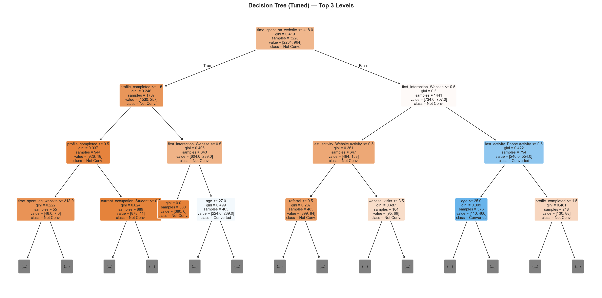
Figure 13. Tuned Decision Tree — top 3 levels. Root split on time_spent_on_website at 418 seconds.
Random Forest Baseline
A Random Forest builds 100 decision trees and lets them vote on the final prediction. Each tree sees a random subset of data and features, introducing diversity that reduces overfitting. The baseline RF (unlimited depth) still overfit — training accuracy was 99.97% — but the ensemble's voting mechanism improved test F1 to 0.7396, beating the baseline DT (0.6995) without any tuning (Figure 14).
{kind=link}
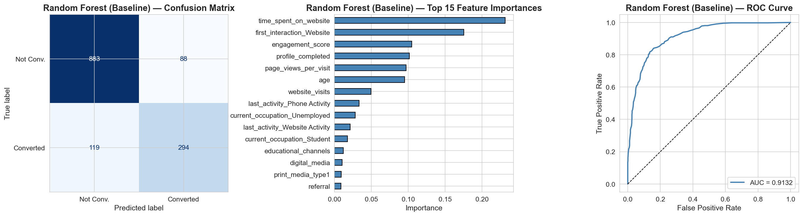
Figure 14. Random Forest Baseline — confusion matrix, feature importances, and ROC curve. AUC = 0.913.
Random Forest Tuned (GridSearchCV)
GridSearchCV identified: max_depth=10, max_features=sqrt, min_samples_leaf=1, n_estimators=100. The RF allows deeper trees (10 vs. DT's 5) because max_features=sqrt forces each tree to consider only 4 of 16 features per split — individual trees are weaker but more diverse, and the ensemble corrects individual errors through voting. Test F1 reached 0.7578, with the highest precision of any model (0.7865) — meaning when the RF flags a lead as a converter, it's right 79% of the time (Figure 15).
{kind=link}
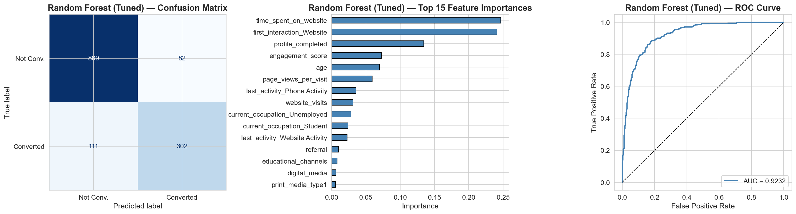
Figure 15. Random Forest Tuned — confusion matrix, feature importances, and ROC curve. AUC = 0.923.
A key insight from the DT/RF comparison: the single tuned Decision Tree (F1 = 0.7631) actually outperformed the untuned Random Forest of 100 trees (F1 = 0.7396). Hyperparameter tuning matters more than model complexity. Always tune before adding complexity.
Objective 4: Test alternative modeling approaches (Logistic Regression, Gradient Boosting).
Logistic Regression — The Linear Baseline
Unlike trees that ask yes/no questions, Logistic Regression draws a single boundary line through the data. It assigns a weight to each feature (positive pushes toward conversion, negative pushes away) and sums them into a probability. After GridSearchCV tuning (C=1, L2 penalty, liblinear solver), the LR achieved test F1 of 0.6735 — 9 points below the tuned DT (Figure 16).
The gap is not from overfitting — LR's train-test gap was the smallest of any model (0.48 points on accuracy). The problem is underfitting: the conversion patterns in this dataset are fundamentally non-linear. The bimodal time-on-website distribution, the interaction between website channel and phone activity, the threshold effects in profile completion — a linear model cannot capture these patterns. However, LR provides unique value: its directional coefficients (Figure 16, center) reveal that first_interaction_Website (+1.25), time_spent_on_website (+1.00), and profile_completed (+0.95) push leads toward conversion, while Student status (-0.50) and Unemployed status (-0.35) push away.
{kind=link}
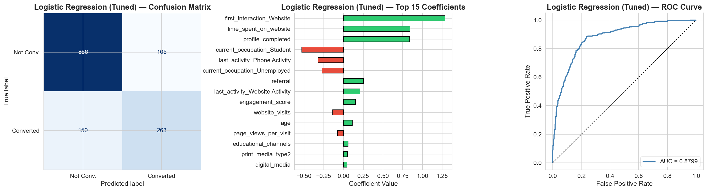
Figure 16. Logistic Regression Tuned — confusion matrix, coefficients, and ROC curve. AUC = 0.880. The 9pp F1 gap below tree models quantifies the cost of the linearity assumption.
Gradient Boosting — Sequential Error Correction
Gradient Boosting builds trees one at a time in sequence, where each new tree focuses specifically on the mistakes the previous trees got wrong. With a learning rate of 0.05 (each tree contributes only 5% of its correction), max_depth=5, and 100 sequential trees, the GB achieved the best cross-validation F1 of any model (0.7682) and the best test AUC (0.9235) (Figure 17). Its test F1 of 0.7601 placed it in a virtual tie with the DT Tuned (0.7631) and RF Tuned (0.7578).
{kind=link}
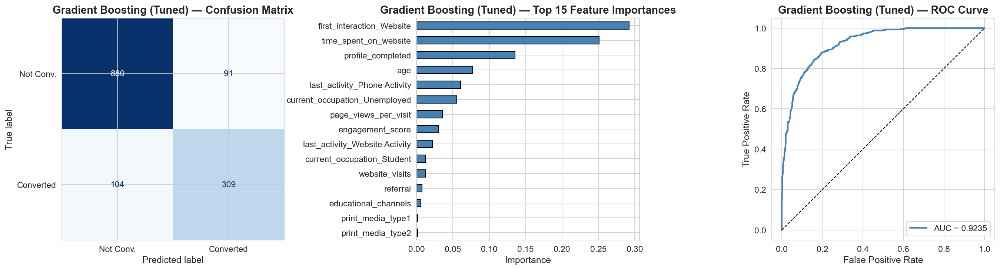
Figure 17. Gradient Boosting Tuned — confusion matrix, feature importances, and ROC curve. AUC = 0.924 (best of any model).
Objective 5: Compare all models and recommend a deployment strategy.
The model comparison (Figure 18) reveals a striking pattern: all three tuned tree-based models converge to F1 approximately equal to 0.76 on the test set, with a spread of only 0.53 percentage points. The DT Tuned wins on F1 (0.7631) and Recall (0.7603), the RF Tuned wins on Precision (0.7865), and the GB Tuned wins on AUC (0.9235) and CV F1 (0.7682). Logistic Regression lags behind at 0.6735 — the 9-point gap is the measured cost of assuming linear relationships.
{kind=link}
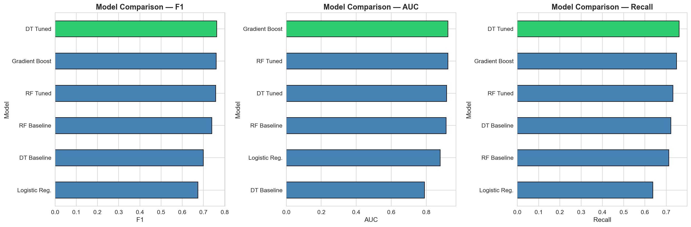
Figure 18. Model comparison across F1, AUC, and Recall. Green bar highlights the winner in each metric.
The ROC curves overlaid on a single plot (Figure 19) show the top four models tightly clustered in the 0.91–0.92 AUC range, with Logistic Regression visibly lower (0.880) and the DT Baseline clearly separated as the weakest (0.789). The Precision-Recall curves (Figure 20) provide a more discriminating view — they focus exclusively on the positive class (converters) and show how each model trades off precision against recall at every possible decision threshold.
{kind=link}
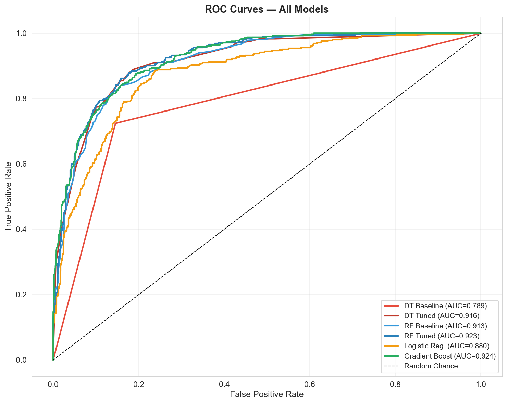
Figure 19. ROC Curves — All Models. Top four models cluster at AUC 0.91–0.92; DT Baseline (0.789) is the clear outlier.
{kind=link}
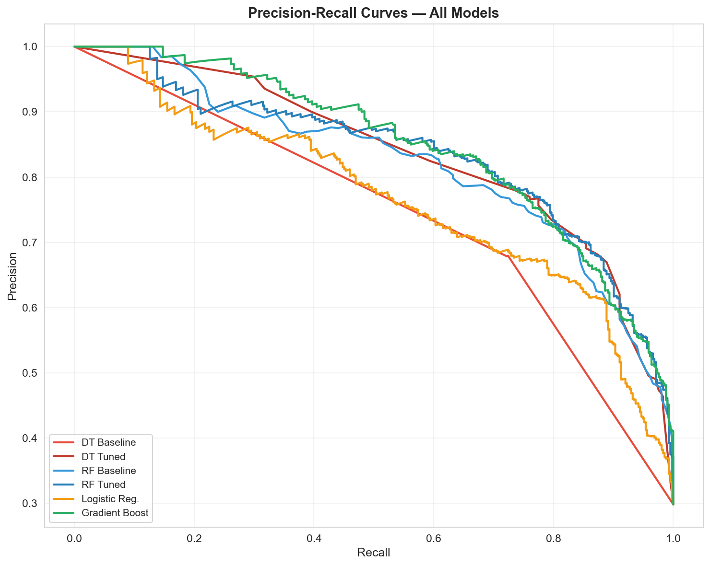
Figure 20. Precision-Recall Curves — All Models. DT Tuned and GB Tuned offer the strongest tradeoff in the business-relevant mid-range (Recall 0.5–0.8).
Deployment Recommendation: The tuned Decision Tree is recommended for deployment based on: highest test F1 (0.7631), smallest train-test gap (1.1 percentage points), most stable cross-validation (plus or minus 0.0159), and full interpretability — every prediction can be traced through a readable 5-level flowchart that translates directly into business rules. For organizations that prefer ranked lead lists over binary classification, the Gradient Boosting model (best AUC = 0.9235) produces the most calibrated probability estimates for sorting leads from most to least likely to convert.
Implementation: Score incoming leads in real-time. Route high-probability leads (greater than 0.7 predicted conversion probability) to senior sales reps for personalized outreach. Automate nurture email sequences for medium-probability leads (0.4–0.7). Deprioritize low-probability leads (less than 0.4) to preserve sales team capacity.
Objective 6: Define what additional data would break through the performance ceiling.
The convergence of three different algorithms at F1 approximately equal to 0.76 tells us the bottleneck is data, not models. No amount of algorithm sophistication will break through this ceiling with the current 16 features. The following data improvements would provide the additional signal needed:
1. Session-Level Engagement Data: The current dataset tracks total time on website, but not session-by-session behavior. Knowing whether a lead spent 17 minutes in one long session versus three short sessions would distinguish focused evaluators from casual browsers.
2. Page-Level Visit Tracking: We know how many pages were viewed but not which pages. A lead who visits the pricing page three times is signaling very different intent than one who only reads blog posts.
3. Profile Field Content: Profile completion level (Low/Medium/High) is the #3 feature, but we don't know what information was provided. Employment status, educational background, and budget range within the profile would be powerful predictors.
4. Phone Call Outcomes: Phone Activity appears in the Decision Tree's highest-conversion path (81%), but we only know whether phone contact occurred — not whether the lead answered, left a voicemail, or requested a callback.
5. Referral Source Details: Referral leads convert at 67.7% but represent only 2% of volume. Understanding who referred them (current student, alumni, employer partner) would help scale this high-ROI channel.
6. Educational Channel Content Audit: Leads exposed to educational channels convert at a slightly lower rate (14.3%) than those not exposed (15.7%). Investigating what content on these channels may be setting wrong expectations or providing enough information for leads to self-disqualify would be valuable.
7. IP Geolocation / Regional Data: Employment funding availability, program relevance, and competitive landscape vary by region. Geographic segmentation could reveal pockets of high and low conversion that current features cannot capture.
The path forward is clear: the models have extracted the maximum signal from the available features. To improve beyond F1 = 0.76, the business must invest in richer data collection — particularly session-level behavior, page-level tracking, and profile content — that would give any of these four models the additional dimensions needed to find finer-grained patterns.